01
Собрать комплект
Загрузить PDF, изображение или TXT. Проверить распознанные поля перед сравнением.

Вход сотрудникаTrace помогает сотруднику банка проверить ответ на конкретный запрос. Каждый пункт связан с платежом, документом и основанием для уточнения.
Проверка комплектности по учебному профилю поставки. Решение по операции принимает сотрудник.
Сканер сверки
Учебный пример · без регистрации
Загрузите ответ на запрос банка. Trace свяжет платежи и подтверждения по договору и ИНН.
Откройте причину расхождения, сверьте её с источником и подготовьте запрос клиенту.
Загрузить PDF, изображение или TXT. Проверить распознанные поля перед сравнением.
Увидеть, чем подтверждён каждый пункт учебного профиля, и открыть документ из замечания.
Открыть исходную строку. Проверить проект сообщения. Дополнить комплект и запустить проверку снова.
Описания процесса Т-Банка и рекомендации Банка России помогают обосновать сценарий. Частота затруднений и эффект Trace в выбранном банке ещё не измерены.
Результаты воспроизводятся на опубликованном синтетическом наборе. Это проверка узкого профиля, не оценка качества на банковских документах.
В презентации приведены четыре гипотезы и доли ответов. Размер выборки и протоколы не приложены. Следующий шаг — проверить первичные ответы и последние реальные кейсы. Посмотреть сводку CustDev
Измеряем активную работу сотрудника вместе с проверкой подсказок. Качество остаётся обязательным условием.
Цель по медианному
активному времени разбора
Цель по доле повторных
запросов из-за неполноты
Предлагаемый пилот:
сотрудники одного процесса
Каждое замечание — с объяснением.
Оценку содержания, подлинности и решение выполняет сотрудник банка.